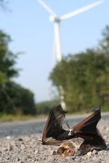

The biggest industrial development that is impacting the species today and for the next 5-10 years is Renewable energy,
more specifically is bat collisions with wind turbine blades and barotrauma which is caused by the sudden drop in air
pressure behind the blades (Government of Canada, 2018). Wind turbines account for one of the largest sources of bat
mortality rates in the world (Government of Canada, 2018). In Canada its estimated that approximately 15.5
bats per turbine are killed annually (Government of Canada, 2018), resulting in approximately 47,000 bats being killed
per year (Government of Canada, 2018).

Fatality from Wind TurbineWind Turbine Farm
Mitigating Effects from Wind Turbines
To mitigate bat fatalities several strategies have been proposed,
these include structural changes to the blades of wind turbines that include feathering the blades,
another adaptation would be to increase the cut-in speed of the turbine blades during the night when the bats are most active.
This had reduced bat fatalities by approximately 60% in Southern Alberta (Government of Canada, 2018).
Other mitigations included curtailment of the systems during peak bat times and the use of an ultrasonic broadcast,
to deter bats from flying around wind turbine farms (Government of Canada, 2018).
Destruction of Maternal Roosts
Little Brown Myotis most regularly uses buildings and bat boxes for maternity colonies. The number of bat colonies in buildings
may be declining as a result of limited available structures and attempts by landowners to exclude bats. Because females tend
to show a relatively high degree of fidelity, excluding bats from previously occupied maternity roosts in anthropogenic structures
would be considered habitat loss. Similarly, habitat loss would occur if a previously occupied bat box is removed from a site.
Any type of development activity that results in the removal of trees or forested landscapes (e.g., land development, geological, exploration,
and oil and gas wells) has the potential to destroy or degrade roosts for the three bat species.
For example, forestry and timber harvesting operations (e.g., salvage logging) may remove tracts of mature forests,
as well as individual snags that may be used by male and female bats for roosting.
The effects of tree removal or roost exclusion may depend on the availability of other suitable habitat,
timing, bat species, bat sex, and other factors.
Roost exclusions may lower reproductive success, alter home range size, change mean colony size,
and decrease site fidelity. Little Brown Myotis may abandon roosting areas after being excluded from roost sites.
However, depending on habitat availability, bats may use another tree for roosting if a previous roosting tree is removed outside the breeding season.
For Northern Myotis roosting in Kentucky, the number of roosts, roost site characteristics, and overall space used
did not change after single highly-used roosts and 24% of secondary roosts were experimentally removed prior to roosting.
However, the distances bats moved between sequential roosts doubled within areas where secondary roosts were removed.
Nevertheless, tolerance limits of roost loss may be influenced by local forest conditions and the social / behavioral
characteristics of the species using the roost.